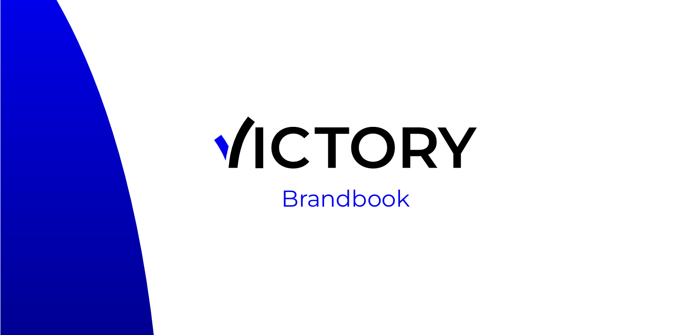

Victory rebranding
Tijdens het tweede semester werkte ik samen met drie andere designers en vier programmeurs aan een
rebrandingproject voor Victory, een bedrijf dat jongeren en schoolverlaters begeleidt bij hun eerste stappen
op
de arbeidsmarkt. Victory fungeert als een soort uitzendbureau, maar gaat een stap verder door jongeren
actief te
ondersteunen in hun persoonlijke en professionele ontwikkeling. Daarbij ligt de nadruk op het werken met
Z-machines, geavanceerde technologieën waarmee jongeren praktijkervaring opdoen in een innovatieve en
leerzame
omgeving.
Mijn bijdrage begon met een grondige researchfase, waarin ik me focuste op benchmarking. Ik onderzocht de
concurrentie, bracht in kaart wat zij beter doen, waar onze zwakke punten lagen en op welke manier zij een
bedreiging vormen voor Victory. Deze analyse vormde de basis voor onze strategische aanpak en gaf richting
aan
de creatieve fase die daarop volgde.
Vanuit de inzichten uit mijn onderzoek ontwikkelde ik een doordachte visuele identiteit. Ik ontwierp een
nieuw
logo, stelde een eigentijds kleurenpalet samen en koos een typografie die de kernwaarden van Victory
weerspiegelt en aansluit bij de beoogde doelgroep. Dankzij regelmatige sprint reviews kon ik tussentijds
gerichte feedback verwerken en mijn ontwerp stap voor stap verfijnen. Tijdens de derde sprint finaliseerde
ik
alle visuele elementen en zette ik de puntjes op de i, zodat alles klaar was voor presentatie en
implementatie.
In het begin vond ik het best uitdagend om in een groep te werken, aangezien dit volledig nieuw voor mij
was.
Tijdens de eerste twee sprints liep ik tegen verschillende moeilijkheden aan. Ik stelde hoge eisen aan
mezelf en
legde de lat te hoog, wat het geheel soms overweldigend maakte. Gaandeweg leerde ik die druk loslaten en
begon
ik steeds meer vertrouwen te krijgen in mijn eigen kunnen én in de samenwerking met het team. Ik voelde me
steeds vrijer om ideeën te delen en mijn rol actiever op te nemen. Uiteindelijk raakte ik echt in de flow en
groeide het groepswerk uit tot een bijzonder leerrijke en waardevolle ervaring.
